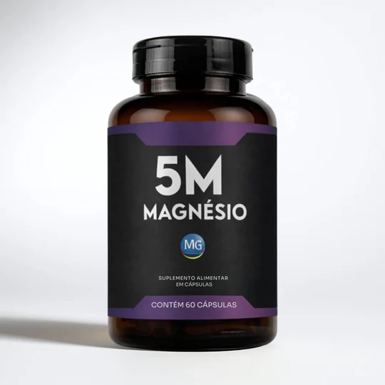

O magnésio participa de mais de 350 reações no organismo — e a maioria das pessoas não repõe da forma certa.
Quero experimentar o Magnésio 5M →O magnésio participa de mais de 350 reações enzimáticas no corpo humano. Quando o nível cai, você sente na pele: músculo travando na madrugada, dificuldade para dormir, irritabilidade e aquela sensação de cansaço que não passa com nenhuma quantidade de descanso.
O problema é que a maioria dos suplementos no mercado usa apenas uma forma de magnésio — geralmente o óxido, que tem baixa absorção e age só em um sistema do organismo. É como tentar resolver cinco problemas com uma única ferramenta.
Cada forma de magnésio tem afinidade por um tecido diferente: muscular, nervoso, cardiovascular, digestivo, energético. Para uma suplementação completa, você precisa das formas certas.
A maioria dos produtos entrega apenas 1 forma. O 5M da Nação Verde reúne as 5 principais formas em uma única cápsula diária, cada uma com função específica no organismo.
| Magnésio comum | 5M Magnésio | |
|---|---|---|
| Formas de magnésio | ❌ 1 forma | ✅ 5 formas |
| Suporte muscular e caimbras | ❌ Parcial | ✅ Completo |
| Apoio ao sono | ❌ Limitado | ✅ Sim |
| Suporte cardiovascular | ❌ Não | ✅ Magnésio Taurato |
| Energia celular | ❌ Não | ✅ Magnésio Dimalato |
| Saúde digestiva | ⚠️ Parcial | ✅ Magnésio Óxido + Cloreto |
| Registro ANVISA | ❌ Varies | ✅ Notificado |
Cada forma foi escolhida pela sua afinidade com um sistema específico do organismo. Uma dose. Cinco frentes.
Alta biodisponibilidade. Essencial para o equilíbrio do corpo e para a vitalidade. Reduz o estresse muscular e apoia a recuperação.
Combina magnésio com taurina. Apoia a saúde cardiovascular e a função cerebral, além de ajudar a estabilizar a pressão arterial.
Combina magnésio com ácido málico. Voltado para produção de energia celular — especialmente útil contra fadiga e falta de disposição.
Contribui para diversas funções vitais e apoia o sistema digestivo, auxiliando no funcionamento intestinal regular.
Fundamental para a produção de suco gástrico e ativação de enzimas digestivas. Essencial para absorção eficiente de nutrientes.
Apenas 2 cápsulas por dia, com água. O horário pode variar dependendo do seu objetivo principal.
Tome as 2 cápsulas à noite, antes de dormir. O magnésio favorece o relaxamento natural e pode ajudar a melhorar a qualidade do sono.
Tome pela manhã, junto ao café da manhã. O Magnésio Dimalato auxilia na produção de energia celular ao longo do dia.
Dica: combine com boa hidratação (pelo menos 2L de água/dia) para potencializar a absorção. Alimentos como castanhas, folhas verdes e sementes também são boas fontes naturais.
"Muito bom. Segunda vez que compro e agora já comecei a ter sócios pra tomar comigo."
"Produto chegou dentro do prazo, estou fazendo uso e gostando muito."
"Já utilizo há algum tempo. Melhorou muito as dores articulares e o sono."
"Comprei pra mim e meu esposo tomar. Já estamos sentindo a diferença — ele sentia muito cansaço e dor nas pernas e disse que já está se sentindo bem melhor. Vou comprar mais."
"Vou começar a usar — foi recomendado por uma amiga que disse que ajudou muito nas dores dela. Resolvi comprar."
Conheça o Magnésio 5M na loja oficial da Nação Verde. Fórmula completa, registro ANVISA, entrega em todo o Brasil.
Quero experimentar o Magnésio 5M →